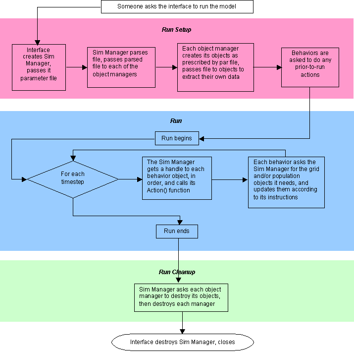

A run is controlled entirely by the Simulation Manager object (class clSimManager). The Simulation Manager object is responsible for creating and destroying all other objects and for triggering each timestep's actions. For more on the specific classes, see Model Architecture.
Here is a diagram showing the basic steps which happens during a run:

The Java interface does not deal directly with the Simulation Manager object; it just launches the C++ executable.